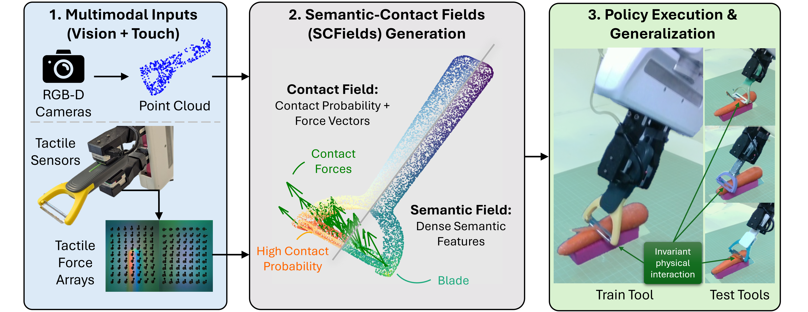
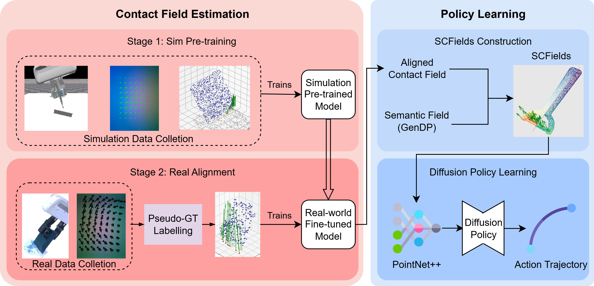

Semantic-Contact Fields for Category-Level Generalizable Tactile Tool Manipulation

Abstract
Generalizing tool manipulation requires both semantic planning and precise physical control. Modern generalist robot policies, such as Vision-Language-Action (VLA) models, often lack the high-fidelity physical grounding required for contact-rich tool manipulation. Conversely, existing contact-aware policies that leverage tactile or haptic sensing are typically instance-specific and fail to generalize across diverse tool geometries. Bridging this gap requires learning unified contact representations from diverse data, yet a fundamental barrier remains: diverse real-world tactile data are prohibitive at scale, while direct zero-shot sim-to-real transfer is challenging due to the complex dynamics of nonlinear deformation of soft sensors.
To address this, we propose Semantic-Contact Fields (SCFields), a unified 3D representation fusing visual semantics with dense contact estimates. We enable this via a two-stage Sim-to-Real Contact Learning Pipeline: first, we pre-train on a large simulation data set to learn general contact physics; second, we fine-tune on a small set of real data, pseudo-labeled via geometric heuristics and force optimization, to align sensor characteristics. This allows physical generalization to unseen tools. We leverage SCFields as the dense observation input for a diffusion policy to enable robust execution of contact-rich tool manipulation tasks. Experiments on scraping, crayon drawing, and peeling demonstrate robust category-level generalization, significantly outperforming vision-only and raw-tactile baselines.
Method Overview

Left: Contact Field Learning Stage 1 learns the general geometry and contact physics in simulated data; Stage 2 aligns sensor domain with pseudo-labeled real data. Right: Policy Learning A Diffusion Policy is trained conditioned on the combined SCFields to achieve robust tool manipulation.
Contact Field Visualization
Real World Demos
BibTeX
@misc{ma2026semanticcontactfieldscategorylevelgeneralizable,
title={Semantic-Contact Fields for Category-Level Generalizable Tactile Tool Manipulation},
author={Kevin Yuchen Ma and Heng Zhang and Weisi Lin and Mike Zheng Shou and Yan Wu},
year={2026},
eprint={2602.13833},
archivePrefix={arXiv},
primaryClass={cs.RO},
url={https://arxiv.org/abs/2602.13833},
}